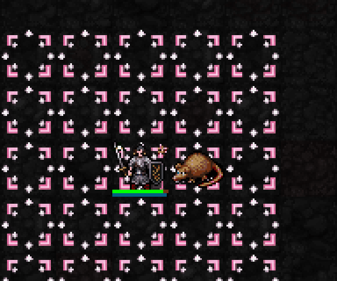
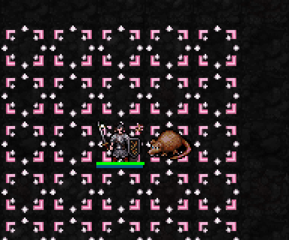

기존 승인된 초록 십자가·벚꽃5개와 연분홍 원형 보호막을 실제 적 처치·회복·보호막에 연결했습니다. 실제SDL 검사장에서 일반 공격 주문 bolt를 적중시켜HP1인 적을 처치한 장면입니다. 위치·HP·행동속도를 통제한 검사장이며 일반 던전 플레이 영상은 아닙니다. 화면에 효과를 덧그리지 않았습니다.

기도술12: HP가 부족하면4 회복. 초록 십자가와 벚꽃이 캐릭터로 모입니다.

기도술12: 보호막4 생성, 상한8. 보호막이 있는 동안 연분홍 원형 표시가 유지됩니다.
신앙50 해금 / 최소 기도술 없음 / 추가MP·신앙·행동 소모 없음. 자신과 경험치를 주는 적이 모두 성역 안일 때 직접 처치하면2+floor(기도술/6) HP 회복. 20aut마다 최대1회. 초과 회복량은 보호막으로, 상한4+floor(기도술/3). 초과 회복을 얻을 때 지속50aut로 갱신. 성역 이탈·재설치·층 이동·만료·신앙50 미만이면 제거.
일반 공격·주문·독·구름·함정 등은 피해 감소 후 보호막으로 흡수합니다. 자해 비용·고통·신의 징벌은 제외합니다. 불꽃 지속 피해·소환수 처치·경험치 없는 적은 회복 발동 대상이 아닙니다.
실제 처치·부분 초과·풀피·발동 간격·상한·흡수·제외 조건·성역 이탈·만료·층 이동, 새 프로세스 저장복원과 동일한 흡수 후 상태/난수,22신 회귀 검사 통과. 일반 실행본 반영.